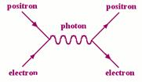
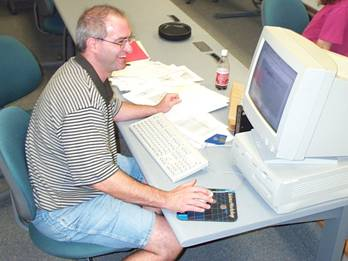

Resources for Current Teachers
Particle physics
Student Activities
Student Experiments
Equipment Information
Teachers' Classrooms
PARTICLE Fellow
|
Where can I learn more about particle physics?
Click
here for an introduction
to elementary particle physics. Learn about quarks, leptons, anti-matter, muons, cosmic rays, particle accelerators, and more. Plenty of links to great sites!
Click here to view slides
of the lectures given to teachers. You'll find a collection of talks that were given during past summer institutes. Topics include cosmic rays, the standard model, relativity, neutrinos, and accelerators. |
What activities could my students complete?
- Why Switch Counters for Calibration Worksheet (html)
- Excel Graphing Worksheet (pdf)
- Data Analysis Tutorial Problems (pdf)
and Solutions (pdf)
- Cosmic Ray Detectors and Basic Lab Skills (doc)
- Particle Adventure Web Handouts
- Particle Adventure Internet Activity I (doc)
- Particle Adventure Internet Activity II (doc)
- Particle Adventure Internet Activity III (doc)
- SLAC Online Cosmic Ray Activity (doc)
- Particle Adventure Activities
|
What experiments could my students conduct?
For experiment ideas, procedures, data analysis instructions,
results, and raw data, click here. We have gathered the write-ups teachers have given us to share with other teachers. The experiments are organized by type (muon speed, muon lifetime, muon rate vs. pressure, etc.) and documents appropriate for students have been separated from those appropriate for teachers.
|
What information is available on using the equipment?
For information on using the detectors, click here. You'll find out how the muon detectors work, what parts are included in a set up, how to assemble a set-up, how to optimize voltage, and how to measure the efficiency of the paddles.
For information on using the DAQ program on the computer,
click here.You'll find out how to turn the laptop on/off, start the DAQ program, and use the floppy drive. A list of basic linux commands that are useuful to know is also included. You'll also find a step-by-step guide to using the DAQ program to run various experiments and import data into Excel; it's a word document that is easy to print out as a reference.
For information on using Excel and performing data analysis,
click here. You'll learn some basics about statistics like gaussians and uncertainties, how to import data into Excel, how to make different charts and histograms with error bars in Excel, how to use Stanford's muon data, and how to access an analyze Pittsford-Mendon's muon data.
|
What are other teachers doing in their classrooms?
Joe
Willie’s homepage has documented his student’s
research and also has information on data analysis.
Go to Breaking PARTICLE News for
descriptions of our most recent projects.
For presentations given by teachers, click here.
PARTICLE Blog (?)
|
What can the PARTICLE Fellow do for me?
The PARTICLE Fellow is a physics graduate student at the
University of Rochester who provides participating teachers
with technical support throughout the school year and visits classrooms to give talks and perform demonstrations. For more information
about how the PARTICLE Fellow can be a resource for you, please
visit our classroom outreach
page.
|
| |
|